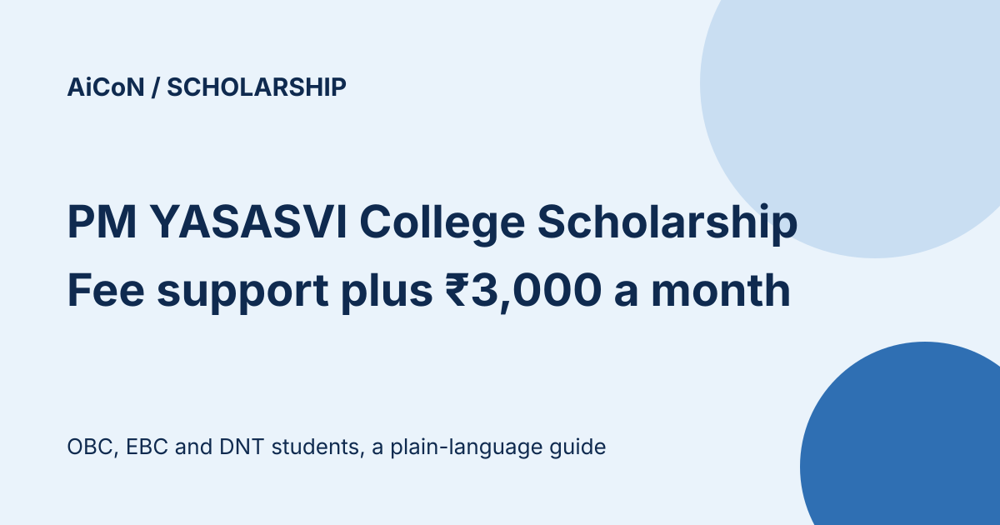

PM YASASVI College Scholarship 2026-27: fee support plus ₹3,000 a month, apply by 31 October
PM YASASVI's Top Class Education in College scheme supports tuition and non-refundable fees, subject to the scheme caps, plus specified living costs for OBC, EBC and DNT students admitted to top institutes such as IITs, IIMs, AIIMS and National Law Universities. Applications for 2026-27 are open on the National Scholarship Portal (NSP) until 31 October 2026. Family income must be up to ₹2.5 lakh a year.

What does it give?
Full tuition and non-refundable fees (capped at ₹2 lakh a year for private institutes), ₹3,000 a month for living expenses, ₹5,000 a year for books and stationery, and a one-time laptop grant of up to ₹45,000. Private flying clubs for Commercial Pilot Training and Type Rating Courses have a separate tuition/non-refundable-fee cap of ₹3.72 lakh per student per year. Laptop assistance includes accessories such as a UPS and printer within the same ₹45,000 one-time limit. It is funded by the Department of Social Justice and Empowerment.
Who can apply?
| Category | OBC (Other Backward Classes), EBC (Economically Backward Classes) or DNT (Denotified, Nomadic and Semi-Nomadic Tribes) students. The guideline gives preference to OBC students. |
|---|---|
| Income | Total annual family income from all sources up to ₹2.5 lakh. |
| Course | Admitted to a full-time course beyond Class XII in a notified institute. These include IITs, IIMs, IIITs, AIIMS, NITs, NIFTs, NIDs and National Law Universities, plus other institutes that qualify under the scheme. Being an IIT, IIM or another listed type is not enough: confirm your specific institute is notified and has slots for your course in the current year. |
| Documents | Income and caste certificates, bank details, admission rank and fee details, uploaded on NSP. |
Key dates on NSP
| Scheme open | 1 June 2026 |
|---|---|
| Student application | Until 31 October 2026 |
| Institute verification and defective applications | Until 15 November 2026 |
| District, state or ministry verification | Until 30 November 2026 |
How are awardees picked?
By merit, not a draw. First-year entrants are ranked on the entrance exam used for their course, for example JEE Advanced for IITs and JEE Main for NITs and IIITs. Ties for the last slot go to the lower family income. 30% of slots at each institute are reserved for eligible girls, in addition to girls selected through the overall merit list. If too few eligible girls apply, the reserved slots may go to eligible boys by merit. Unfilled first-year slots can go to eligible students in later years, ranked on the previous year's result and giving priority to those with more years left in the course. Students who miss out may still be eligible for the Post-Matric Scholarship through their state.
Family limit, renewal and payment
No more than two siblings in one family can receive this scheme. The guideline asks for an affidavit confirming you are not the third sibling receiving it.
Apply every year, including for renewal. Support continues only with satisfactory performance; failure to progress to the next semester or class ends the scholarship. Your institute verifies promotion and admission for renewal.
The guideline provides Direct Benefit Transfer (DBT) to the student after admission and attendance begins. Pay the institute its fees immediately, and no later than one month after receiving the payment. It is not a promise of instant payment or a substitute for checking fee-payment arrangements with your institute.
A careful checklist
- Keep your income and caste certificates, bank details, admission rank and fee details ready.
- Generate your One-Time Registration (OTR) on scholarships.gov.in.
- Apply under PM YASASVI Top Class Education in College before 31 October 2026.
- Ask your institute to verify before 15 November 2026.
We did not log in or apply. We read the current NSP scheme list, the linked guideline marked amended from 2023-24, and the June 2026 scheme summary. The current institute list, course slots and your eligibility still need confirmation with your institute. The guideline mentions an annual 31 October institute-verification date or a date set by DBT Mission; the live NSP listing currently gives 15 November 2026, which is the date shown above. Recheck NSP before applying.
Frequently asked questions
Is there a separate scheme for school students?
Yes, the NSP also lists a PM YASASVI Top Class Education in Schools scheme. This guide covers the college one. The current school listing is marked for renewal; do not assume the college application window also applies to a new school application.
Sources: NSP scheme list, NSP scheme guideline, Scheme summary (June 2026). Checked 10 October 2026. This is an AiCoN explainer, not a government publication.